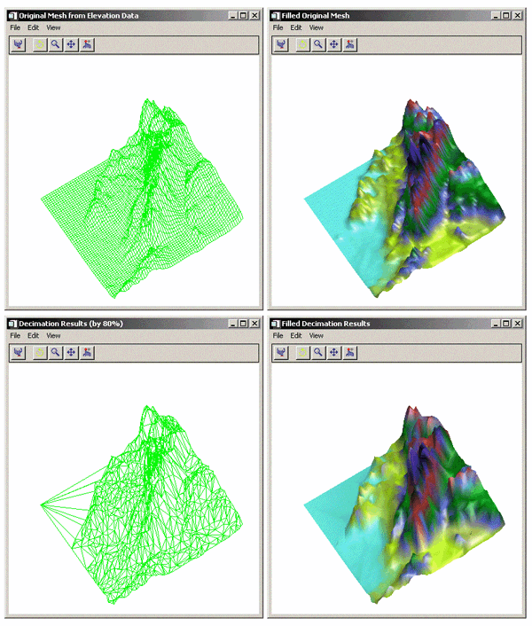

The MESH_DECIMATE simplifies a polygonal mesh by combining neighboring polygons in the mesh in such a way that the shape of the original mesh is maintained as closely as possible. The decimation process is accomplished by locating the two most coplanar polygons, combining them by removing the edge between them, and then retriangulating the combined area. The process is repeated until the mesh contains the requested number of vertices or polygons. The resulting mesh approximates the original mesh with fewer vertices and polygons. MESH_DECIMATE uses the algorithm described in the paper, “Surface Simplification Using Quadric Error Metrics” by Garland and Heckbert.
Note: Decimation is a memory- and CPU-intensive process. Expect the decimation of large models to require large amounts of memory and time.
MESH_DECIMATE converts the original mesh to a triangular mesh before performing decimation. The resulting mesh returned by MESH_DECIMATE is always a triangular mesh. For best results, all the polygons in the original mesh should be convex.
If the original mesh is not a triangular mesh, the mesh returned by MESH_DECIMATE might contain more triangles than the number of polygons in the original mesh, due to the conversion of the polygonal mesh to a triangular mesh. MESH_DECIMATE applies the PERCENT_POLYGONS keyword value to the number of triangles in the mesh after it is converted to a triangular mesh in order to perform the same amount of decimation.
MESH_DECIMATE uses fourth-order polynomials to locate the polygons it combines. Despite using double-precision in these calculations, mesh coordinate data that varies greatly in magnitude can cause MESH_DECIMATE to produce unacceptable results. For example, a 200x200 height field might have X and Y vertex coordinate data in the range [0-199] and Z data with a magnitude of about 10^20. In cases like these, the data should be offset or scaled so that all dimensions of the vertex data are of similar magnitude.
Result = MESH_DECIMATE ( Verts , Conn , Connout [, VERTICES = variable ] [, PERCENT_VERTICES = percent | , PERCENT_POLYGONS = percent ] [, PROGRESS_CALLBACK = string ] [, PROGRESS_METHOD = string ] [, PROGRESS_OBJECT = objref ] [, PROGRESS_PERCENT = percent {0 to 100}] [, PROGRESS_USERDATA = value ] )
The return value is the number of triangles in the output connectivity array.
Input array of polygonal vertices [3, n ].
Input polygonal mesh connectivity array.
Output polygonal mesh connectivity array.
Note: Some of the vertices in the Verts array may not be referenced by the Connout array.
Set this keyword to the percent of the original vertices to be returned in the Connout array. It specifies the amount of decimation to perform.
Set this keyword to the percent of the original polygons to be returned in the Connout array. It specifies the amount of decimation to perform.
Note: PERCENT_VERTICES and PERCENT_POLYGONS are mutually exclusive keywords. If neither keyword is supplied, MESH_DECIMATE performs no decimation and returns the original mesh after converting it to a triangular mesh.
Set this keyword to a scalar string containing the name of the IDL function that MESH_DECIMATE calls at PROGRESS_PERCENT intervals as it decimates the polygonal mesh.
The PROGRESS_CALLBACK function returns a zero to signal MESH_DECIMATE to stop decimating, which causes MESH_DECIMATE to return the partially decimated mesh. If the callback function returns a non-zero, MESH_DECIMATE continues to decimate the mesh.
The PROGRESS_CALLBACK function must specify a single argument, Percent , which MESH_DECIMATE sets to an integer between 0 and 100, inclusive.
The PROGRESS_CALLBACK function may specify an optional USERDATA keyword, which MESH_DECIMATE sets to the variable provided in the PROGRESS_USERDATA keyword.
The following code show an example of a progress callback function:
FUNCTION myProgressCallback, percent,
$ USERDATA = myStruct
oProgressBar = myStruct.oProgressBar
; This method updates the progress bar
; graphic and returns TRUE if the user has
; NOT pressed the cancel button.
keepGoing = oProgressBar->$
UpdateProgressValue(percent)
RETURN, keepGoing
END
Set this keyword to a scalar string containing the name of a function method that MESH_DECIMATE calls at PROGRESS_PERCENT intervals as it decimates the mesh. If this keyword is set, then the PROGRESS_OBJECT keyword must be set to an object reference that is an instance of a class that defines the specified method.
The PROGRESS_METHOD function method callback has the same specification as the callback described in the PROGRESS_CALLBACK keyword, except that it is defined as an object class method:
FUNCTION myClass::myProgressCallback, $
percent, USERDATA = myStruct
Set this keyword to an object reference that is an instance of a class that defines the method specified with the PROGRESS_METHOD keyword. If this keyword is set, then the PROGRESS_METHOD keyword must also be set.
Set this keyword to a scalar in the range [1, 100] to specify the interval between invocations of the callback function. The default value is 5 and IDL silently clamps other values to the range [1, 100].
For example, a value of 5 (the default) specifies MESH_DECIMATE will call the callback function when the decimation is 0% complete, 5% complete, 10% complete, ..., 95% complete, and 100% complete.
Set this property to any IDL variable that MESH_DECIMATE passes to the callback function in the callback function’s USERDATA keyword parameter. If this keyword is specified, then the callback function must be able to accept keyword parameters.
Set this keyword to a named variable that will contain an output array of the vertices generated by the MESH_DECIMATE function. If this keyword is specified, the function is not restricted to using the original set of vertices specified in the Verts parameter when generating the decimated mesh, allowing it to generate a more optimal mesh by determining its own placement of vertices. If this keyword is specified, the Connout argument will consist of a polygon connectivity list whose indices refer to the vertex list stored in the named variable specified with this keyword. Otherwise, the Connout argument will consist of a polygon connectivity list that refers to the original vertex list Verts .
This example decimates a DEM (digital elevation model) mesh. The DEM in this example comes from the elevbin.dat file found in the examples/data directory. The DEM is converted into a mesh with the MESH_OBJ procedure. The results of this routine are placed in a polygon object, which is added to a model. The models are displayed in the XOBJVIEW utility. The XOBJVEW utility allows you to click-and-drag the polygon object to rotate and translate it. See XOBJVIEW for more information on this utility.
The first display contains a wire outline of the DEM as a mesh. When you quit out of the first XOBJVIEW display, the second XOBJVIEW display will appear showing a filled mesh. The colors correspond to the change in elevation. The third display is the result of decimating the mesh down to 20 percent of the original number of vertices. The final display is the resulting mesh filled with the elevation colors.
The example is split into three sections; click on each section to enter the code at the IDL command line.
; Determine path to data file.
elevbinFile = FILEPATH('elevbin.dat', $
SUBDIRECTORY = ['examples', 'data'])
; Initialize data parameters.
elevbinSize = [64, 64]
elevbinData = BYTARR(elevbinSize[0], elevbinSize[1], /NOZERO)
; Open file, read in data, and close file.
OPENR, unit, elevbinFile, /GET_LUN
READU, unit, elevbinData
FREE_LUN, unit
; Convert data into a mesh, which is defined by
; vertice locations and their connectivity.
MESH_OBJ, 1, vertices, connectivity, elevbinData
; Initialize a model for display.
oModel = OBJ_NEW('IDLgrModel')
; Form a polygon from the mesh.
oPolygon = OBJ_NEW('IDLgrPolygon', vertices, $
POLYGONS = connectivity, SHADING = 1.5, $
COLOR = [0, 255, 0], STYLE = 1)
; Add polygon to model.
oModel->Add, oPolygon
; Rotate model for better initial perspective.
oModel->Scale, 1, 1, 0.25
oModel->Rotate, [-1, 0, 1], 45.
; Display model in the XOBJVIEW utility.
XOBJVIEW, oModel, /BLOCK, SCALE = 1., $
TITLE = 'Original Mesh from Elevation Data'
; Derive a color table for the filled polygon.
oPalette = OBJ_NEW('IDLgrPalette')
oPalette->LOADCT, 29
; Fill in the polygon mesh with the colors of the table
; (the colors correspond to the z-values of the polygon).
oPolygon->SetProperty, STYLE = 2, $
VERT_COLORS = BYTSCL(vertices[2, *]), $
PALETTE = oPalette
; Display model in the XOBJVIEW utility.
XOBJVIEW, oModel, /BLOCK, SCALE = 1., $
TITLE = 'Filled Original Mesh'
; Decimate the mesh down to 20 percent of the original
; number of vertices.
numberVertices = MESH_DECIMATE(vertices, connectivity, $
decimatedConnectivity, VERTICES = decimatedVertices, $
PERCENT_VERTICES = 20)
; Update the polygon with the resulting decimated mesh.
oPolygon->SetProperty, DATA = decimatedVertices, $
POLYGONS = decimatedConnectivity, STYLE = 1, $
VERT_COLORS = 0, COLOR = [0, 255, 0]
; Display updated model in the XOBJVIEW utility.
XOBJVIEW, oModel, /BLOCK, SCALE = 1., $
TITLE = 'Decimation Results (by 80%)'
; Fill in the updated polygon mesh with the colors of
; the table (the colors correspond to the z-values of
; the updated polygon).
oPolygon->SetProperty, STYLE = 2, $
VERT_COLORS = BYTSCL(decimatedVertices[2, *]), $
PALETTE = oPalette
; Display model in the XOBJVIEW utility.
XOBJVIEW, oModel, /BLOCK, SCALE = 1., $
TITLE = 'Filled Decimation Results'
; Cleanup all the objects by destroying the model.
OBJ_DESTROY, [oModel, oPalette]
The results of the decimation are shown in the bottom row of the following figure.
|
 |
|
5.5 |
Introduced |
|
6.0 |
Added PROGRESS_CALLBACK, PROGRESS_METHOD, PROGRESS_OBJECT, PROGRESS_PERCENT, and PROGRESS_USERDATA keywords |
MESH_CLIP , MESH_ISSOLID , MESH_MERGE , MESH_NUMTRIANGLES , MESH_OBJ , MESH_SMOOTH , MESH_SURFACEAREA , MESH_VALIDATE , MESH_VOLUME